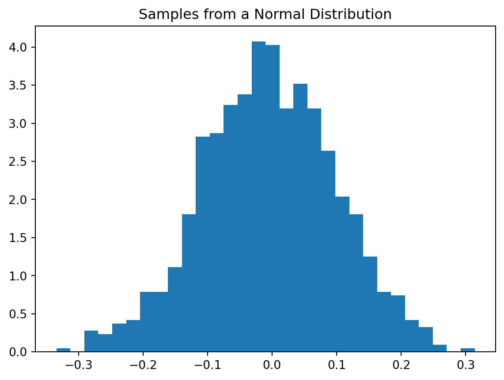

Code
import matplotlib.pyplot as plt
import numpy as npThe numpy.random module provides functions for working with random numbers.
import matplotlib.pyplot as plt
import numpy as npYou can generate arrays of random numbers from various distributions.
# initialize the random number generator
rng = np.random.default_rng()
# Generate a 2x3 array of random floats between 0 and 1
print(rng.random((2, 3)))
# Generate a 2x3 array of random integers between 1 and 10
print(rng.integers(1, 10, size=(2, 3)))[[0.55119481 0.27189491 0.93403571]
[0.50666609 0.1944005 0.37423314]]
[[4 6 3]
[5 3 6]]You can randomly shuffle the elements of an array.
a = np.arange(10)
rng.shuffle(a)
print(a)[4 0 1 8 9 7 2 6 5 3]We can simulate rolling a fair six-sided die multiple times.
rolls = rng.integers(1, 7, size=100)
print(f'First 10 rolls: {rolls[:10]}')
# Count the occurrences of each outcome
counts = np.bincount(rolls)[1:]
print(f'Counts for each outcome (1-6): {counts}')First 10 rolls: [3 3 6 5 1 4 1 1 5 1]
Counts for each outcome (1-6): [17 20 20 13 18 12]In many scientific applications, you need to draw samples from a specific statistical distribution, like the normal (Gaussian) distribution.
mu, sigma = 0, 0.1 # mean and standard deviation
samples = rng.normal(mu, sigma, 1000)
# Plot a histogram of the samples
plt.hist(samples, bins=30, density=True)
plt.title('Samples from a Normal Distribution')
plt.show()
For scientific experiments and debugging, it’s crucial to have reproducible results. You can achieve this by setting a “seed” for the random number generator. The same seed will always produce the same sequence of random numbers.
rng = np.random.default_rng(42) # Set the seed
print(rng.random(5))
rng = np.random.default_rng(42) # Reset the seed
print(rng.random(5))[0.77395605 0.43887844 0.85859792 0.69736803 0.09417735]
[0.77395605 0.43887844 0.85859792 0.69736803 0.09417735]